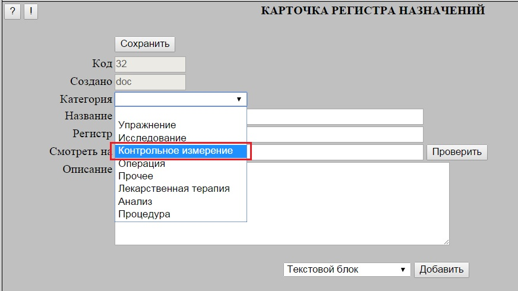
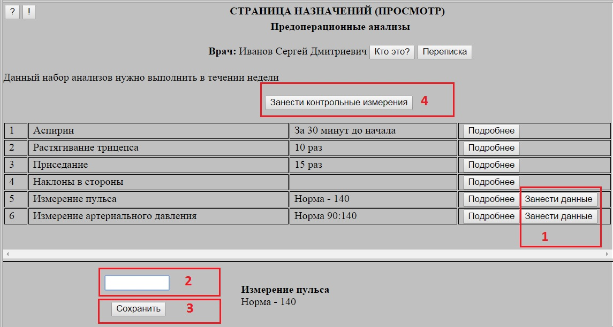
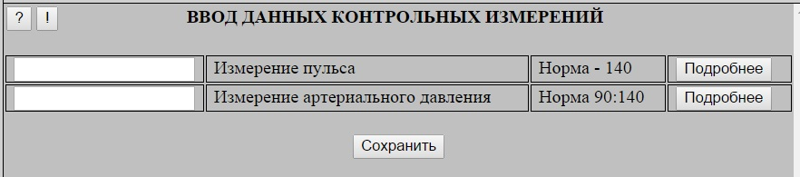
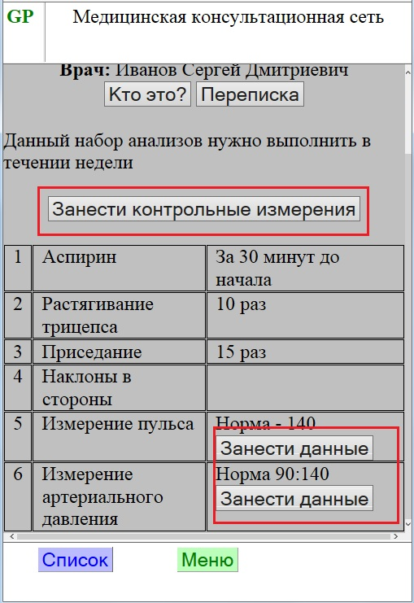
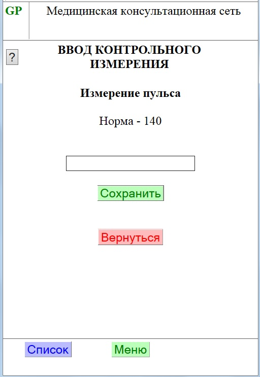
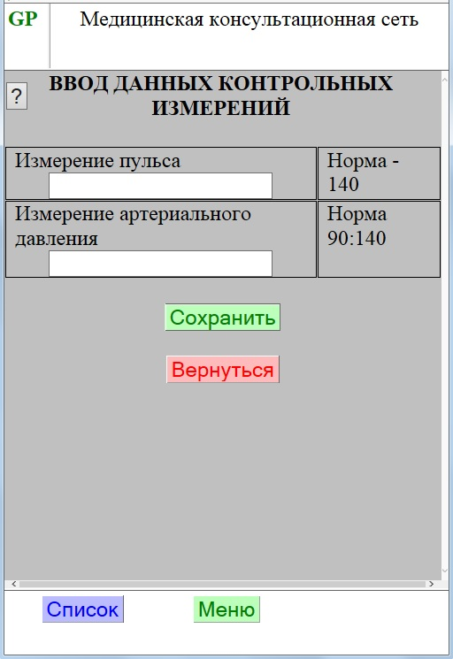
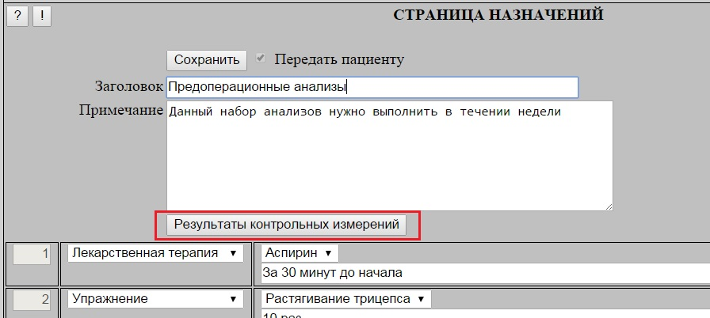
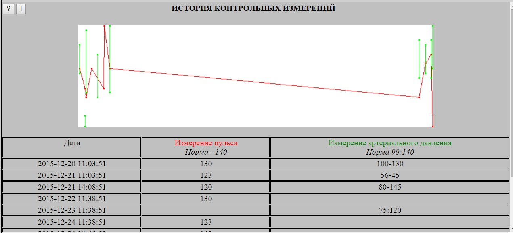

Новая категория назначений - "Контрольные измерения" предназначен для сбора и передачи врачу информации
по текущему состоянию пациента на разных этапах исполнения комплексов назначений.
Категория "Контрольные измерения" введена в общий список категорий.
В "Общем регистре назначений" относящиеся к ней назначения описываются аналогично всем остальным категориям назначений.

При отображении назначения Пациенту, включенные в его состав позиции контрольных измерений имеют в правой колонке специальную кнопку "Занести данные" (1).
При ее нажатии в нижнем блоке экрана отображается форма ввода соотвествующего измеряемого показателя - необходимо ввести нужное значение в поле (2) и
нажать кнопку (3) для его передачи на сервер.

Вводимые значения могут быть одного из следующих видов:
Текстовые
Цифровые однозначные (например, пульс)
Цифровые диапазонные (например, артериальное давление)
Кроме того, в случае наличия нескольких контрольных показателей можно использовать общую форму ввода -
она открывается по кнопке "Зачести контрольные измерения" (4) в заголовке страницы назначения:

В мобильной версии портала используются аналогичные формы. При этом ввод единичного показателя также осуществляется с отдельной формы.



Для просмотра введенных Пациентом значений контрольных показателей, Врач на страницы назначений нажимает кнопку "Результаты контрольных измерений".
Данная кнопка появляется только в том случае, если в список назначения включены какие-либо контрол-ные измерения.

На появляющейся форме отображается таблица с историей изменения контрольных параметров.
Над таблицей отображается график изменения показателей.
При этом "однозначные" показатели отображаются в виде линейного графика (красный цвет на данной картинке),
а "диапазонные" - в виде диапазонных отрезков (зеленый цвет). Текстовые значения на графике не отображаются
Цвет графиков соотвествует цвету заголовок колонок.

При включении контрольных измерений в состав страницы назначения следует иметь следующее:
Для обеспечения возможности корректировки введенных значений измерений, из введенных на протяжении 2 часов значений берется последнее
Если необходимо измерить один и тот же контрольный показатель, например, в начале и конце комплекса упражнений,
то в состав комплекса необходимо включать соответствующее число позиций такого показателя (то есть, в данном примере - два)
При удалении контрольного измерения со страницы назначений все сохраненные по нему данные будут потеряны.
Поэтому, при попытке удаления такого назначения запрашивается подтверждение.
В отличии от других категорий назначения, однажды сохраненное в составе страницы назначений контрольное измерение уже не может быть изменено
на какое-либо другое назначение - только удалено.
Данные ограничения относятся только к формированию СТРАНИЦЫ НАЗНАЧЕНИЙ и не действуют при формировании КОМПЛЕКСОВ НАЗНАЧЕНИЙ.